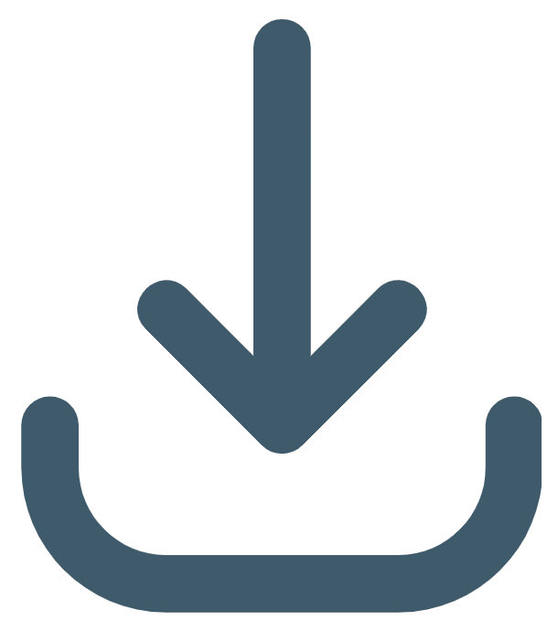

{% extends "layout_logged_in.html" %}
{% block content %}

<a href="/dashboard" class="back-link">← Back to dashboard</a>

    
<div class="output-container">
    <div class="audio-card">
        <h3 class="left-align">Summary Audio</h3>
        <div class="audio-controls">
            
            <audio id="audioPlayer" controls>
                Your browser does not support the audio element.
            </audio>
            <br>
            <div class="flex audio-container">
                
                
            </div>
            <br><br>
            <div class="icon-text-container">
                
                <span class="icon-text">Download Audio</span>
            </div>
        </div>
    </div>
    <div class="output-text-card">
        <h3>Summary Text</h3>
        <div class="text-box">
            <p>{{ session.get('summary_text')|safe }}</p>
    </div>
</div>

<script>
    const audioPlayer = document.getElementById('audioPlayer');
    const userId = "{{ user_id }}";
    
    async function loadAudio(userId, mp3Filename) {
                try {
                    const response = await fetch(`/fetch_audio/${userId}/${mp3Filename}`);
                    if (!response.ok) {
                        throw new Error('Network response was not ok');
                    }
                    const audioBlob = await response.blob();
                    const audioUrl = URL.createObjectURL(audioBlob);
                    const audioPlayer = document.getElementById('audioPlayer');
                    audioPlayer.src = audioUrl;
                    audioPlayer.load();
                } catch (error) {
                    console.error('Error fetching audio:', error);
                }
            }

    function playAudio() {
        audioPlayer.play();
    }

    function pauseAudio() {
        audioPlayer.pause();
    }

    function rewindAudio() {
        audioPlayer.currentTime -= 10; // Rewind by 10 seconds
    }

    function forwardAudio() {
        audioPlayer.currentTime += 10; // Forward by 10 seconds
    }

    function downloadAudio() {
        const audioPlayer = document.getElementById('audioPlayer');
        const audioSrc = audioPlayer.src; // Get the source URL

        console.log(audioSrc);
        const link = document.createElement('a');
        link.href = audioSrc;
        link.download = 'audio-file.mp3'; // Set the filename for download
        document.body.appendChild(link);
        link.click();
        document.body.removeChild(link);
    }

    function saveToLibrary() {
        // For this example, saving to library is simulated as a console log
        console.log('Saved to library!');
        alert('Audio saved to library!');
    }

    // Function to call loadAudio when the page loads
    window.onload = function() {
            // Retrieve userId and audio_filename from Flask context or HTML data attributes
            const userId = "{{ user_id }}";  // Pass user_id from Flask context
            const audioFilename = "{{ audio_filename }}";  // Pass audio_filename from Flask context

            // Call loadAudio with the retrieved userId and audioFilename
            loadAudio(userId, audioFilename);
        };
</script>
{% endblock content %}